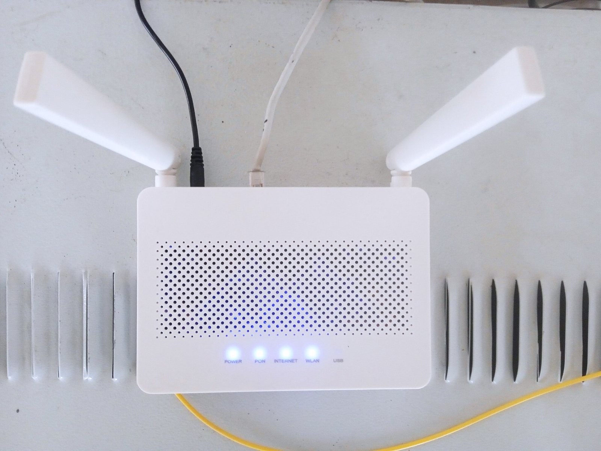

Роутер для дома: почему «самый дорогой» не значит «лучший»

Медленный интернет чаще виноват не провайдер, а старый роутер. Рассказываем, как выбрать маршрутизатор под квартиру и количество устройств.
Считаем устройства
Смартфоны, ноутбуки, ТВ, умные лампы, датчики — в обычной квартире 15–25 подключений. Дешёвый роутер «для 10 устройств» начинает ронять Wi-Fi.
На что смотреть
- Wi-Fi 6 (802.11ax) — минимум в 2026 году, лучше Wi-Fi 6E.
- MU-MIMO и Beamforming — стабильность при многих устройствах.
- Порты — гигабитные LAN и WAN обязательно.
- Процессор и память — у дешёвых моделей перезагрузки при нагрузке.
Формат под квартиру
| Площадь | Решение |
|---|---|
| 1–2 комнаты | один мощный роутер |
| 3+ комнаты, толстые стены | mesh-система из 2–3 точек |
| Частный дом | mesh + точка на улицу |
Модели по бюджету
- До 4000 ₽ — TP-Link Archer AX: рабочий Wi-Fi 6 без излишеств.
- До 10 000 ₽ — Xiaomi / Tenda mesh-комплект: покрытие всей квартиры.
- Для энтузиастов — ASUS с прошивкой или Keenetic: гибкая настройка, VPN, контроль трафика.
Вывод
Для квартиры с 20+ устройствами берите Wi-Fi 6 роутер от 3000 ₽ или mesh-пару. Дорогие игровые роутеры с RGB не ускоряют интернет.
Поставьте роутер в центр квартиры и выше — это даёт больше прироста, чем покупка модели втрое дороже.
Проверьте актуальные цены
Ссылки на маркетплейсы и сервисы ведут на проверенные предложения, для вас цена не меняется.
Найти на Маркете →